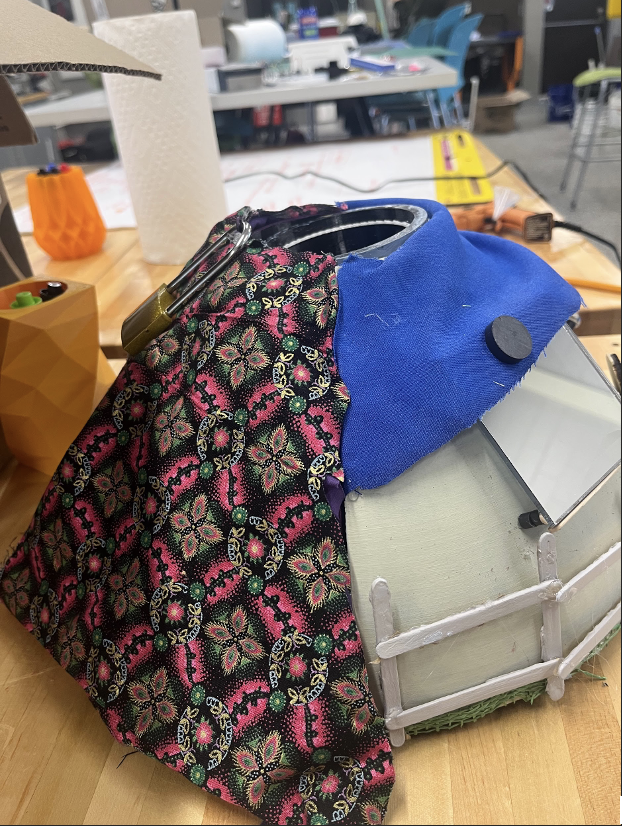
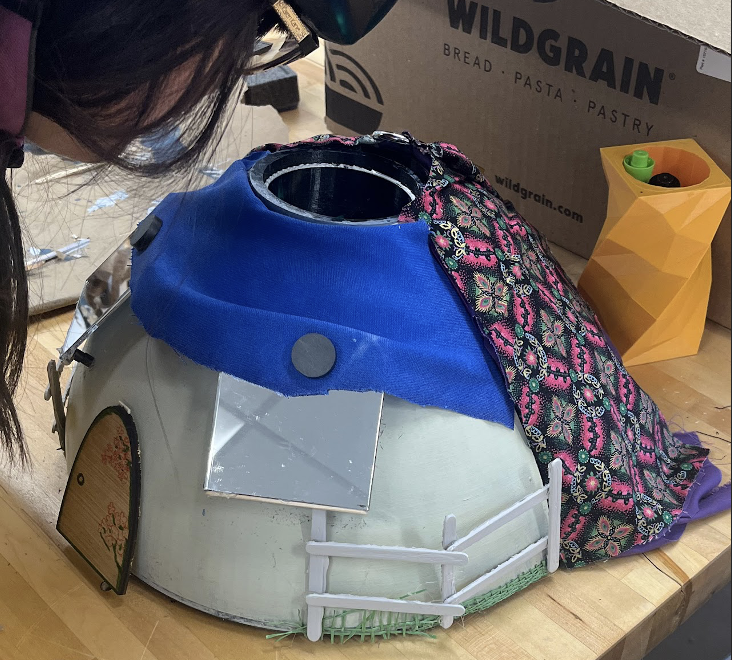

Project Name: The Times it's not about US
As everything wrong with a white, male-dominated
society, queer women of color bear the burden of
understanding and the responsibility to fight. We
imagine these women as martyrs and saviors but we
forget that their lives are far beyond our history
books. Somedays, some moments they were just people,
struggling as people do. My multimedia sculpture honors
these women by allowing viewers to peek into the
excellence of Ball Culture and see the heart that goes
into being a community mother.

